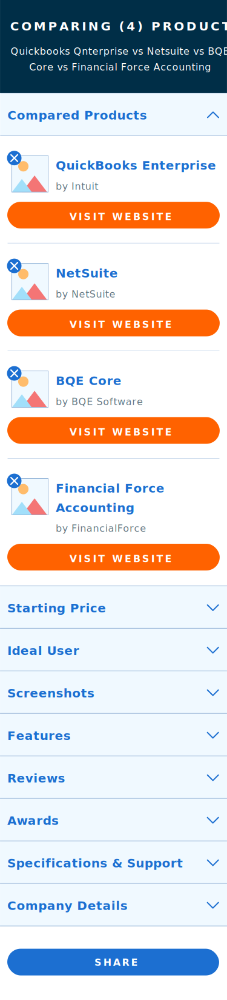
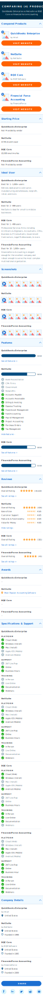

Old Compare
New Compare
 Comparison Table Optimized for Mobile
Redesigning a data-heavy table for mobile
One of Capterra's strongest features is its software product comparison table. However, the table, like many complicated data displays, was never optimized for mobile viewers. In fact, up until Google rolled out mobile-first-indexing, the comparison table was not even accessible for mobile users.
A partner UX designer and I were charged with rethinking our mobile compare user flow and coming up with a solution to the clunky template we had live. We started by scouring the internet to find other examples of complex data tables on mobile, watching Hotjar recordings of our users interact with the live template, and completing 10 moderated interviews of buyers in the process of comparing software.
It was simple enough to identify which data points were most important to users (pricing, reviews, features, etc.), but it was more of a challenge to find out how users wanted to view this information. We found that users could navigate the horizontal scroll table, but that it wasn't a pleasant experience - especially on a slow internet connection.
After ideation, I mocked up an alternative approach: breaking the table apart into discrete accordions so that users can compare products across one data point at a time. This design has the advantage of "chunking" information into smaller bits - a tactic often used in mobile design when users are on the move and less interested in seeing everything at once.
We transformed the mockup into a functioning prototype and put it in front of our users. We found that comprehension increased and conversion rate stayed the same - a win from a revenue perspective as well as a user perspective.
Want to see more of Amelia's work?
Check out her full design portfolio: